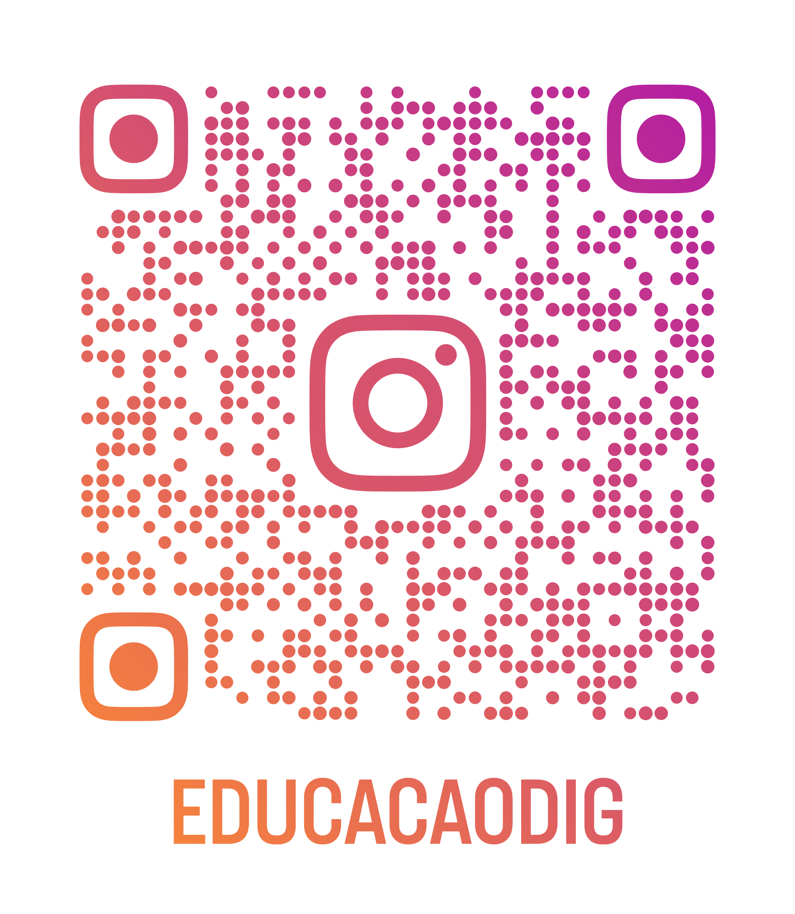

O novo currículo visa consolidar os fundamentos da Educação Digital e Midiática, alinhando o contexto paulista às competências de computação previstas na Base Nacional Comum Curricular (BNCC).
A implementação sistemática nas redes estadual e municipais de São Paulo está prevista para iniciar no primeiro semestre de 2026, preparando os estudantes para um futuro cada vez mais tecnológico.
Acompanhe nossas novidades

Escaneie o código acima ou clique no botão para nos seguir no Instagram.
Acessar Instagram